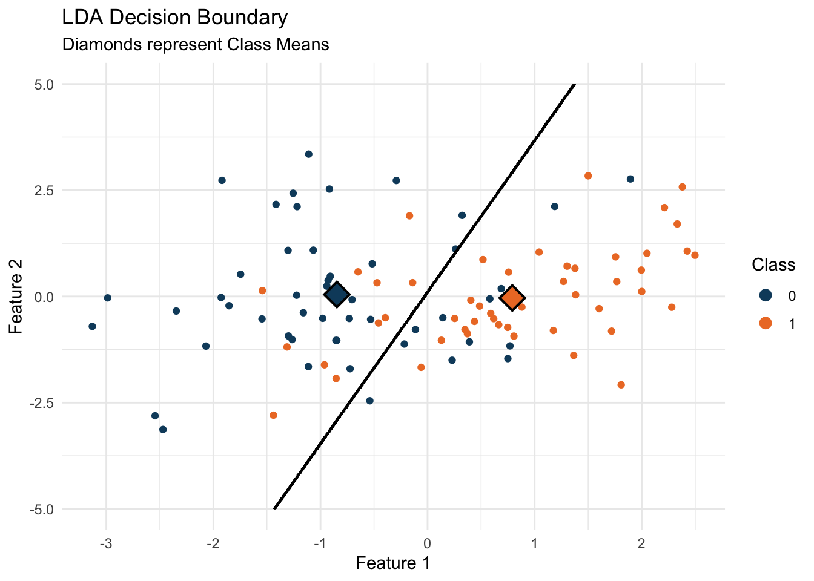

A brief overview of Linear Discriminant Analysis (LDA) and how it can be used to classify data.
Author
Jacob Jameson
Published
February 15, 2024
Linear Discriminant Analysis (LDA) is a classic method in statistics and machine learning for classification and dimensionality reduction. LDA is particularly known for its simplicity, efficiency, and interpretability. This post aims to demystify LDA by exploring its mathematical foundations and demonstrating its application through a simulated example in R.
The Essence of LDA
Imagine you’re at a party and there are two types of fruit on the table: apples and oranges. You’re blindfolded and asked to classify the fruits using only a scale (to weigh them) and a ruler (to measure their diameter). Intuitively, you might notice that, generally, oranges are slightly heavier and larger in diameter than apples. LDA does something similar with data; it tries to find the “scale” and “ruler” (metaphorically speaking) that best separate different classes, like apples and oranges, based on their features.
The Math Behind the Magic
Bayes’ Theorem at a Glance
LDA is based on Bayes’ theorem, a fundamental concept in probability theory. Bayes’ theorem tells us how to update our beliefs (probabilities) about an event happening (like identifying an orange) given some evidence (the fruit’s weight and diameter). It’s about revising our assumptions with new data.
Assumptions of LDA
LDA makes a couple of key assumptions:
Normal Distribution: It assumes that the data points for each class (like our apples and oranges) are normally distributed. This means if you plot the features (weight and diameter), they’ll form a bell curve, with most apples (or oranges) near the average, and fewer as you move away from the center.
Equal Variance: LDA assumes that these bell curves for each class have the same shape, though they might be centered at different points. This is like saying, while apples and oranges might differ in average size and weight, the variation around their averages is similar.
The LDA Decision Rule
LDA looks for a line (or in more complex cases, a plane or hyperplane) that best separates our classes (apples from oranges) based on their features. It calculates the means (averages) and variances (spread) for each class and then finds the line where the distance between the means is maximized relative to the variance.
Mathematically, this involves calculating a score (the discriminant score) for each data point that measures how far it is from each class’s mean, adjusted for the overall variance. Data points are then classified based on which score is higher, indicating which class they’re closer to.
Putting LDA into Practice: Simulating Data in R
Now, let’s see how this works in practice with our R example. We simulate two classes with distinct means but shared variances, plotting them to visualize the data. We will then fit an LDA model to the data and plot the decision boundary, which shows how LDA separates the two classes based on their features.
# Simulate the datalibrary(MASS) # For lda() and mvrnorm()
Attaching package: 'MASS'
The following object is masked from 'package:dplyr':
select
set.seed(100) # Ensure reproducibilitymu1 <-c(-1, 0) # Mean for class 1mu2 <-c(1, 0) # Mean for class 2Sigma <-matrix(c(2, 1, 1, 2), ncol =2) # Same covariance matrix for both classes# Generate dataclass1 <-mvrnorm(n =50, mu = mu1, Sigma = Sigma)class2 <-mvrnorm(n =50, mu = mu2, Sigma = Sigma)data <-rbind(class1, class2)labels <-factor(c(rep(0, 50), rep(1, 50)))data <-data.frame(data, class = labels)
With the data simulated, we can plot it to visualize the distribution of the two classes:
ggplot(data, aes(x = X1, y = X2, color = class)) +geom_point() +theme_minimal() +labs(title ="Plot of the Data",x ="Feature 1", y ="Feature 2") +scale_color_manual(values =c('#0e4a6b', '#ed7b2e')) +guides(color =guide_legend(title ="Class", override.aes =list(size =3)))
Having visualized our data, we proceed to apply LDA to classify these points and find the decision boundary that best separates them:
# Fit LDA modellda_fit <-lda(class ~ ., data = data)
We can now visualize the decision boundary that LDA has learned from the data:
# plot the decision boundaryx <-seq(-5, 5, length.out =1000)y <-seq(-5, 5, length.out =1000)grid <-expand.grid(X1 = x, X2 = y)grid$class <-predict(lda_fit, newdata = grid)$classmeans <-as.data.frame(lda_fit$means)means$class <-factor(0:1)means$size <-5ggplot(data, aes(x = X1, y = X2, color = class)) +geom_point() +theme_minimal() +geom_contour(data = grid, aes(x = X1, y = X2, z =as.numeric(class)), color ="black") +geom_point(data = means, aes(x = X1, y = X2), color ='black', size =8, shape=18) +geom_point(data = means, aes(x = X1, y = X2, color = class), size =6, shape=18) +labs(title ="LDA Decision Boundary",subtitle ="Diamonds represent Class Means",x ="Feature 1", y ="Feature 2") +scale_color_manual(values =c('#0e4a6b', '#ed7b2e')) +guides(color =guide_legend(title ="Class", override.aes =list(size =3)))

What Does This Mean?
When we plot the decision boundary found by LDA, we’re seeing the line that best distinguishes between our classes based on the data. Points on one side of the line are more likely to be Class 0, and on the other, Class 1. The class means (marked as diamonds on our plot) help us visualize the centers around which our data clusters, and the decision boundary shows how LDA uses these centers to classify the data.
Conclusion
LDA is a powerful and intuitive method for classification and dimensionality reduction. It’s a great starting point for understanding more complex methods. By demystifying the math behind LDA and demonstrating its application in R, I hope this post has made LDA more accessible and understandable.